Digital Prototyping for Design¶
Electronics and Coding¶
The task for this day was to make some music with an Ardunio compatible board using a buzzer as an output. I started with some built in examples using the tone() function. To take it further I wanted to find a more interesting way to control the sounds rather than using a programmed melody. I started out with a potentiometer to control the pitch using the Arduino tone() function. This function generates synthesized square waves.
I am interested in making a version of this paper synthesizer eventually. I wanted to see if I could make my own ribbon potentiometer instead of buying the soft potentiometer that they suggest. I found a couple resources online that I have linked below in references. I made a quick prototype out of an old TMB (metro) card, some conductive tape, and a strip of Velostat.
It took quite a bit of testing and research to figure out how to get it to work properly since I know very little about electrical engineering. When I first plugged the sensor in it was reacting to touch but also still jumping all over the place when it wasn't being activated. I realized I needed to add a pulldown resistor to keep it at a zero value when it was not pressed. That resolved the problem of it making sounds when touched. I had another issue of it being jumpy and playing multiple notes when it was touched. I solved that by smoothing the analog input from the sensor. I had some problems getting it right and kept getting an error. I went and asked ChatGPT to help me figure out where I was going wrong and I got a great answer! ChatGPT explained to me exactly where I went wrong and suggested a few lines to fix the mistake. I got the paper potentiometer working really well but I was getting sick of the Ardunio tone() screams and beeps.
I decided to explore the Mozzi Library a bit. Mozzi uses oscillators and filters to make way more interesting sounds. I tried out some of the example codes with the paper potentiometer and was pretty cool. In the future weeks I am interested in making a diy synth based on this paper potentiometer and the Mozzi library.
(use the arrows to see the other pages of the presentation)
Electronics and Coding Lab Notes by amanda
References¶
-
Arduino Tone Generator by Kevin at diyelectronicmusic.wordpress.com
-
Ribbon Potentiometer on Inscrutables
-
Paper Synth by Bryan Cera
2D/3D Design Tools¶
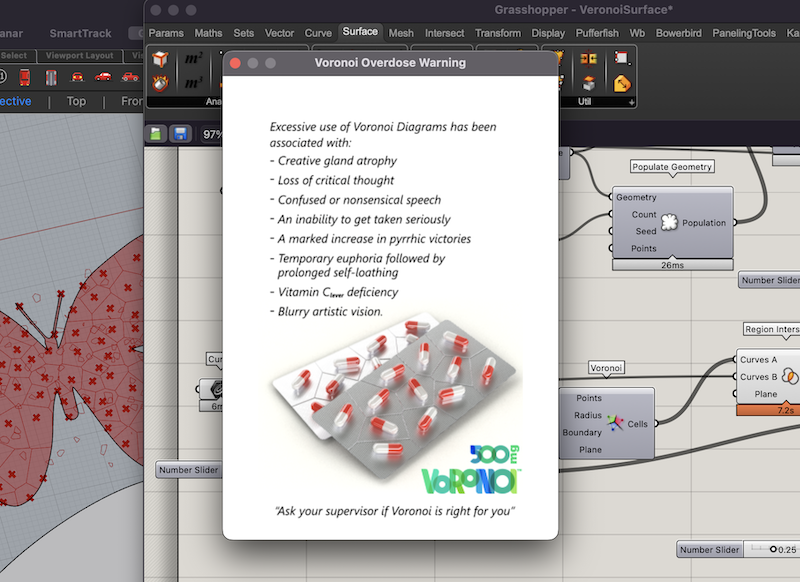
For this activity we were tasked with creating a 3D design based on algorithmic thinking of any object. I chose to work with Grasshopper. I have taken a few classes and tutorials on this over the last several years but I don't use it so I tend to forget everything I learn. I am hoping to use it more this term and hopefully retain some of what I learn.
I started out by following a grasshopper beginner tutorial online.
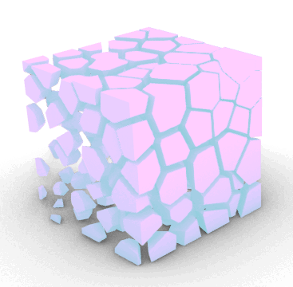
playing with attractor points
I started following some more grasshopper tutorials and decided to work on using some of SVGs that I created in some previous weeks as a starting point. This proved to be way more difficult than I realized. It is hard (for a beginner) to get the Voronoi tesselation to work in a non-rectangular surface.
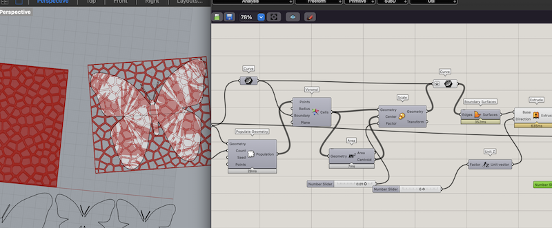
Eventually after many hours, errors, and warnings of Voronoi overdose from Grasshopper I managed to get something I could use.
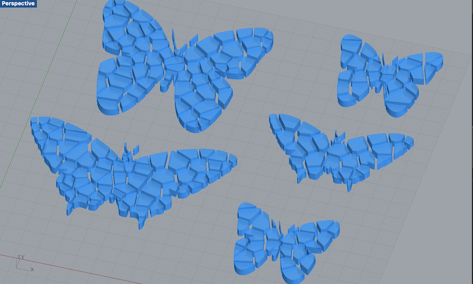 Voronoi tessellated butterflies
I was using some similar designs last year during Fabricademy that I 3D printed onto fabric during the Computational Couture week. Before when I made them I had to start with a square of the tesselation and then cut the shape out that I wanted each time. With this parametric version I can import any SVGs and convert them to this pattern that is nice for 3D printing on fabrics. I also have sliders to control the numbers of points, height of extrusion, and seed pattern so I can adjust depending on the look I am going for.
Files¶
References¶
Grasshopper Voronoi on Surface
2D Fabrication¶
For this task we had to design and laser cut a pressfit artifact. I wanted to make a tool for a new embroidery hobby I recently picked up. I designed a rectangular slate embroidery frame to be cut on the laser. These frames are typically made from wood and fit together with pegs and lacing thread. I designed a version that fits together with laser cut parts. I adjusted only some of the slots to account for the laser kerf as I wanted some of the pieces to be permanent and some of the pieces that act like pegs to be able to be removed over and over in line with the original design.
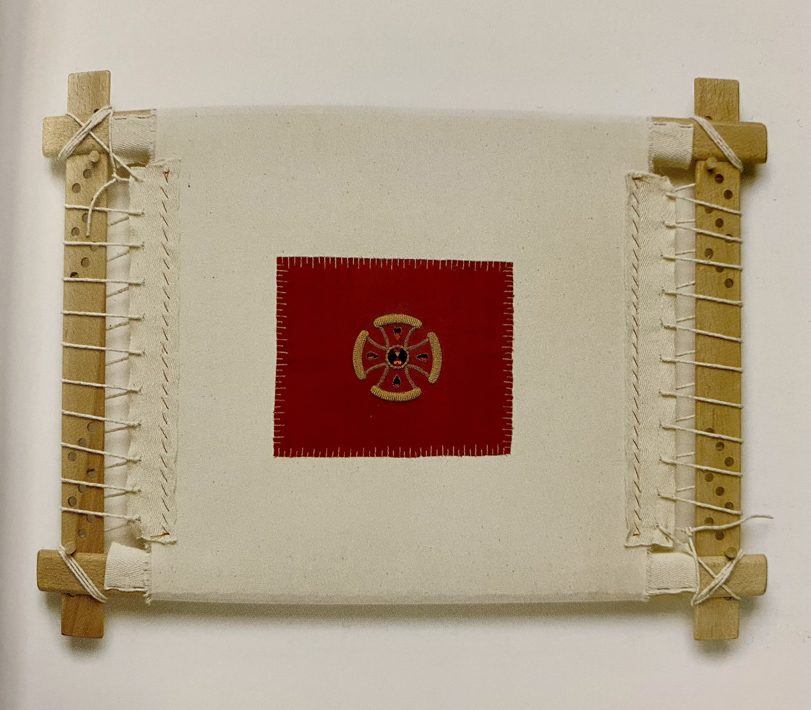
slate frame from Goldwork by Hazel Everett
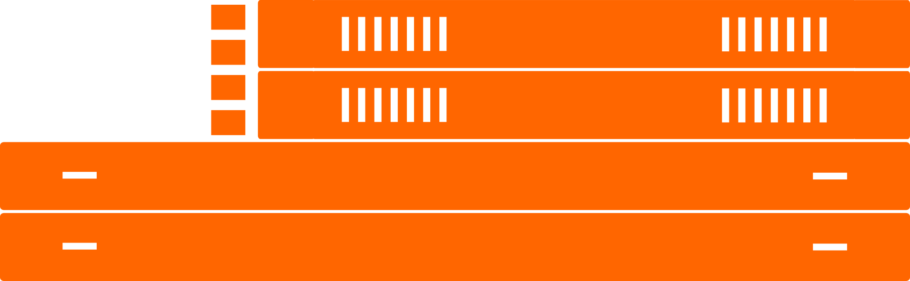
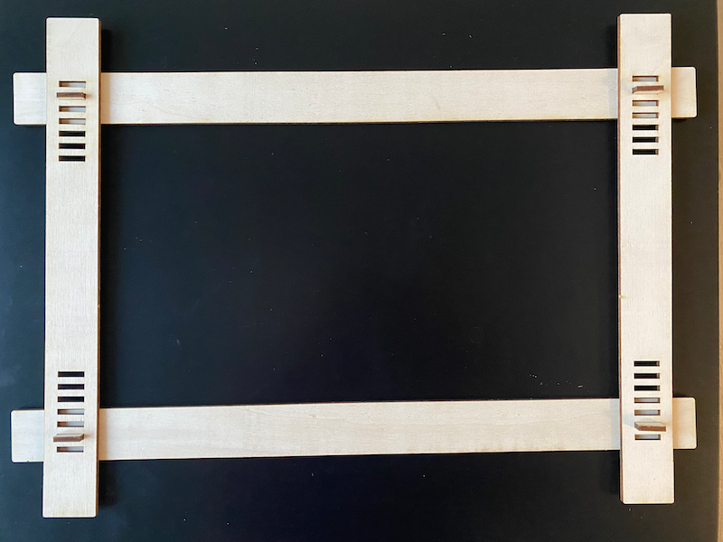
Files¶
{kind=link}
References¶
Image from Goldwork Techniques, Projects, and Pure Inspiration by Hazel Everett
Inputs and Outputs¶

In this class we learned how we could communicate between two Arduinos using an LED connected to one Arduino to transmit pulses or dots and dashes to another Ardiuino that has a light sensor (LDR). This would allow messages to be sent between the two Arduinos encoded in Morse Code.
I had already used an LDR sensor in a previous project so I wanted to work on the transmitting (LED) side. I tried it a bit myself but couldn't get it to work on my own so I went on a search for some examples to help me out. I found this adaptive morse code detector on instructables and tried it out. They have the code for both the encoder and decoder but I just worked with the encoder. With this I was able to control the pulses of the LED with the by changing the text in the code.
I really think it was cool to use the LED as an output and a sensor on the other to communicate between the two boards. I have used sensors before to sense things like the environment or movement but I never thought to communicate between two Arduinos this way. Further I would have thought you would need to do something more complicated like connect to a WIFI Network or Bluetooth to actually communicate between two devices like this. Communication was accomplished with two way more simple components. It gives me another way to think about different ways to connect and think about these devices.
References¶
Micro Challenge 1¶

We were given a "Micro Challenge" to design and build a tool or artifact to help in the process of designing, creating, thinking, or collaborating with others. For this challenge, I teamed up with Myrto and Seher. We come from different professional backgrounds, and it took us a while to think of an idea that would align with all of our research interests. Eventually, we settled on the question: what if we could store data inside the objects we use in our daily life?
We were inspired to explore the concept of measuring from a hyper-personal perspective in a post-scientific way. We asked each other questions, such as when does measuring stop facilitating and start preventing a process? Are the usual measuring units contrary to replicability? Why do we measure things? Is it to save time instead of doing everything by trial and error, or for capitalism and control outcome prediction? We also wanted to explore other fields, such as storytelling and the strict binary distinction between the "positive" and "negative" of molds and objects.
We began designing a tool that could encode audio messages onto the surface of everyday objects. This machine would be able to take audio input in real time, process it, and emboss it onto a ceramic cup, similar to how sound can be recorded onto a vinyl record. The messages will be engraved onto ceramics, and cups, pots, and other objects will become carriers of our stories that will travel through time. It is a concept that deals with continuity and archiving.
We knew this would be an ambitious artifact to make, and we most likely wouldn't be able to complete it in the four days of the first micro challenge. We planned to make the first iteration of the prototype this week, which consists of a motorized turntable and an arm that could move up and down and hold different toolheads such as a pen. This first iteration was designed to write on a paper cup and test out our idea. We hope to make improvements to the design in subsequent micro challenge weeks.
Although we come from different backgrounds, I think this allowed us to make a lot of progress in a short amount of time. Each of us had strengths that we were able to contribute to the group work this week. In the last few days, I spent a lot of time learning about how to program microcontrollers to control the two servo motors we needed for this prototype. I had never programmed a motor before, so this was all new to me. It was really fun, and I am looking forward to getting more into it in the coming weeks. My teammates focused on the design and fabrication of the turntable and started exploring the sound sensing piece of the project. We didn't have time to connect the sound input to the project, but we will be exploring that in the coming weeks. This week, we managed to build a simple and nice turntable and motorize it, as well as create a frame for the z-axis that will serve as an interchangeable toolhead for pens and carving tools.
Check out the full project on our GitHub
Andaaza by Seher, Myrto, & Amanda
References¶
Using the Arduino AccelStepper Library
AccelStepper Library
Vinyl Record Cutting Lathe Fabacademy Project by Ambroise de Vries
DIY Record Cutting Fabacademy project by David Robert
Networking¶
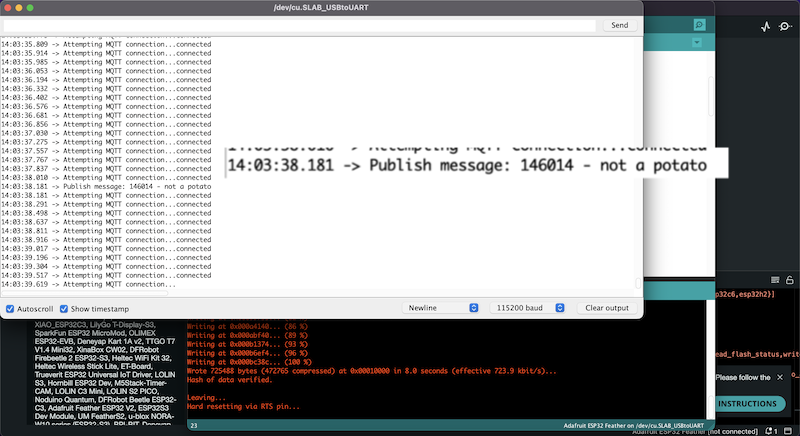
In this class we learned about the foundations of the internet and how it works. We learned that the internet is essentially a network of devices storing copies of bits on hard drives. We also discussed different types of networks, network layers and ended up creating out own local network in class.
We connected the ESP32 Feather over the classroom WIFI to an MQTT broker set up by our instructor. Once the messages were received it copied the messages over the WIFI network to all the other ESP32 ESP32 feathers that were connected to the broker. Once the local network was set up were able to receive messages to our classmates through the Arduino serial monitor.
I saw this class as a sort of continuation of what we learned in the inputs and outputs class. It is interesting to learn about different high and more low tech ways of communication but using the same Arduino board. It helped me understand and contextualize all the different layers of communication protocols on both on the Arduino hardware and over a more complicated network. After this class I am seeing more and more possibilities for things I can do with this.
3D Scanning & 3D Software¶
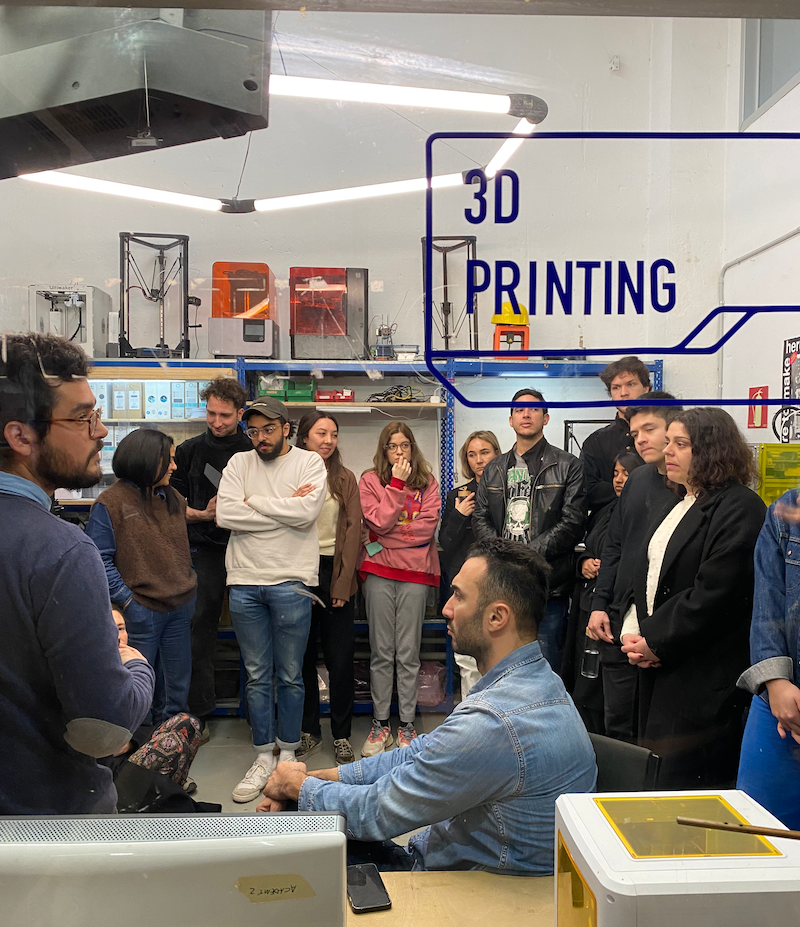
For this class we learned about 3D scanning tools and 3D printing. We also got to learn how the Fab Lab 3d printers and booking system worked. Our task for this two options:
Scan an object and then print it
or
Print and object and then scan it
I decided to scan an object and then see if I could print it. I had tried some cell phone scanning and photogrammetry apps in the past with varying results. This time I tried an entirely new one called Captur3.
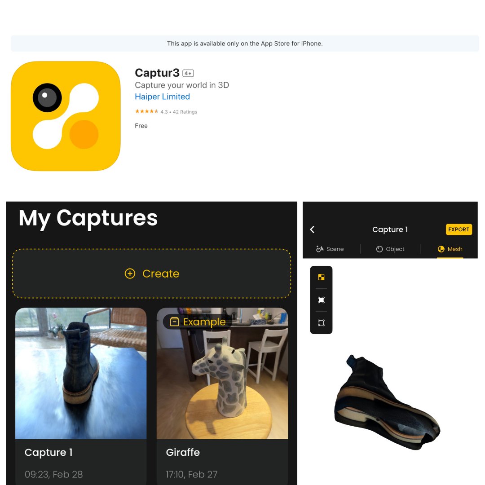
It was pretty easy to use. It is based on photogrammetry and lets you export an obj for free. First, you define 3 sides of the image. After those points are set you walk around the object to scan all sides.
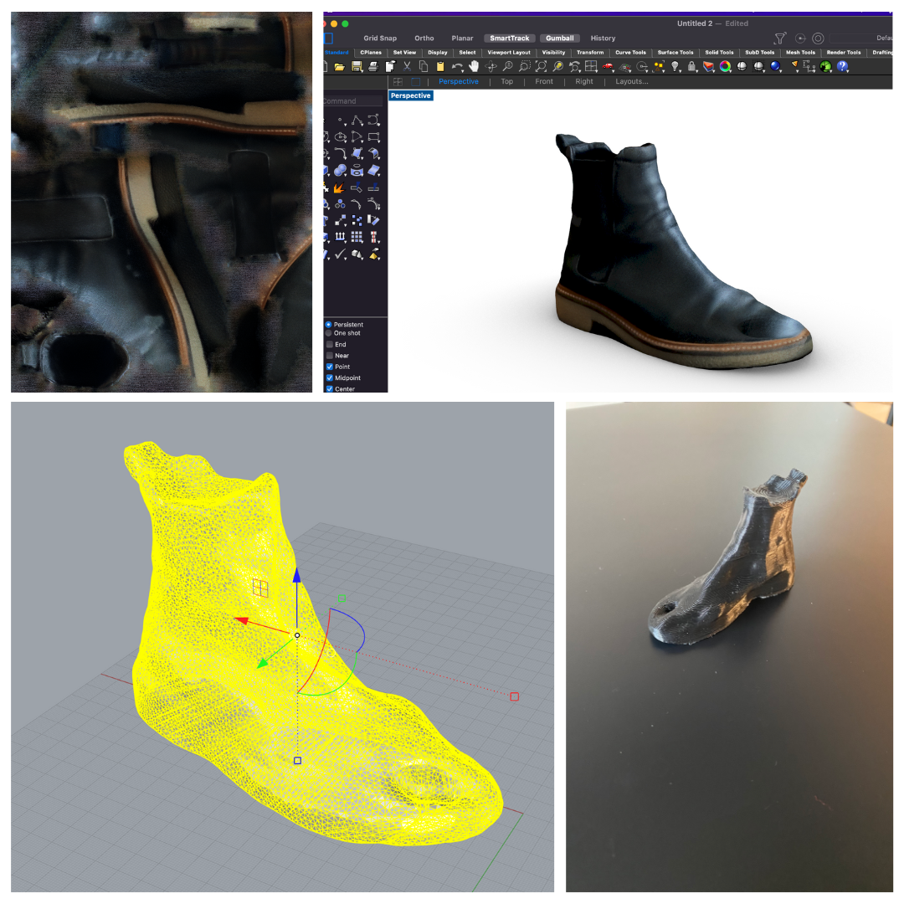
The main problem I ran into was that I couldn't scan the bottom of my object. As a result the mesh I was left with was open on the bottom. I had to go into Rhino and clean up the bottom and cap it off to make it 3D printable. This app is great for objects with a flat bottom that could easily be capped off. Considering I scanned a black shoe on top of a black table I think it came out pretty well. There was also an odd hole in the toe that probably resulted from some sort of shadow in the shoe. In the end I decided to leave it because I thought it was funny and wanted to see how it would come out in the print. The 3D printing part was pretty straightforward. I have had 3D printing experience in the past and I had no issues with the printing part.
Files¶
Interfaces - Machine Interactions¶
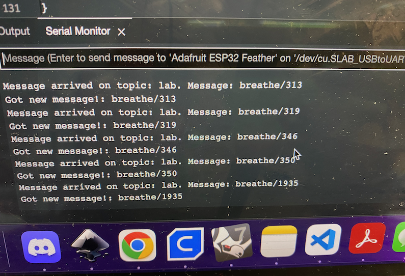
Machine Interactions by agjarv
CNC¶

For this week I partnered with Sami to recreate an open source loom project we found online from Kellie Dunn. Sami and I hope to recreate the loom and use it to host weaving workshops to our craft group in the next term. This project will include cnc milled, laser cut, and 3D printed parts. Here I will document the CNC milled portion. Her original design was meant to be entirely laser cut and we adapted it so the frame could be milled on the CNC.
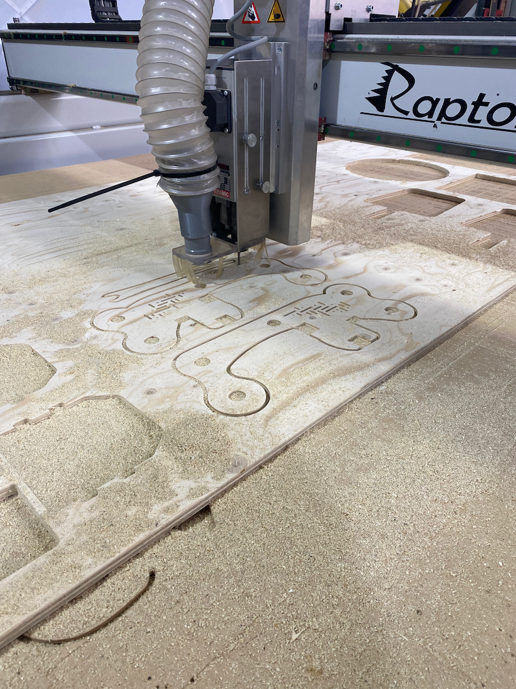
Kellie had great documentation on her Github on how she made the loom. Her goal was to make a loom that is functional and also a beautiful object someone would want to keep around. She also included suggestions at the end for improvements she would make if she made the loom again. Sami and I incorporated these suggestions and redesigned the loom a bit before recreating it. To make the loom more sturdy we added another support beam to the bottom to the bottom to make it more stable and to keep it from skewing under tension. We also created pockets for the heddle to sit down into to keep it from skewing from side to side like it would in the more open design. When assembling we went ahead and reversed the screws on the ratcheting mechanisms to prevent them from interfering with the clothing winding around.
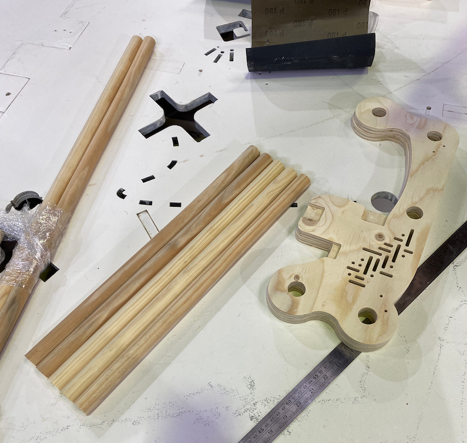
Overall we were really with the quality and finish of the plywood once we sanded it. There were some tolerance issued with all the dowels fitting into the holes initially. Some fit and some did not due to inconsistencies in the dowels we bought. A moderate amount of hand sanding solved this and allowed them to fit. We learned a lot on how to prepare the files for the CNC. Some things we would need to consider going forward is the size of the mill end in relation to the screws we are using. Eduardo helped us resolve all of our issued pretty quickly and now we have a better idea on how do design for CNC milling in the future.
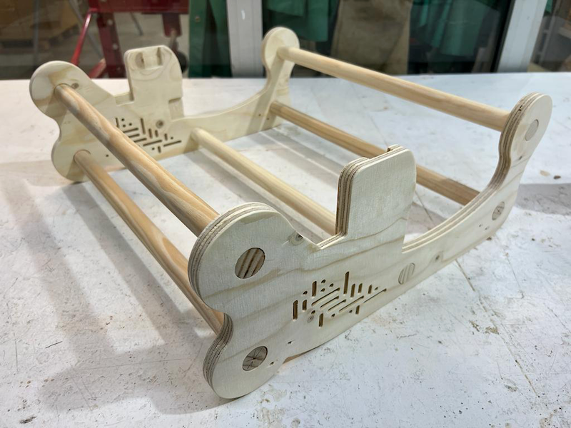
Ratchet Test by agjarv
Files¶
References¶
Micro Challenge 2¶
Myrto, Seher, and I decided to continue working on our project from the last challenge. We made a good amount of progress this time. The main parts we focused on were modeling, molding and casting a plaster mold for our ceramic cups to be slipcast and connecting a microphone interface for the z-axis stepper motor. We made some mistakes, learned a lot and still had a lot of fun in the process.
Check out the full project on our GitHub
I have had some experience with making slipcast molds from 3D printed objects in the past. Usually I build the molds with removable side walls. In this project we decided to 3D print the entire mold including the mold. This also ended up taking over 7 hours to print each half of the mold. We ran into some issues with our mold design as well. The walls were too rigid for the plaster to slip out. As a result we had to break the plastic mold to get our plaster mold removed. In the next iterations we will definitely be making molds for the plaster with removable walls.
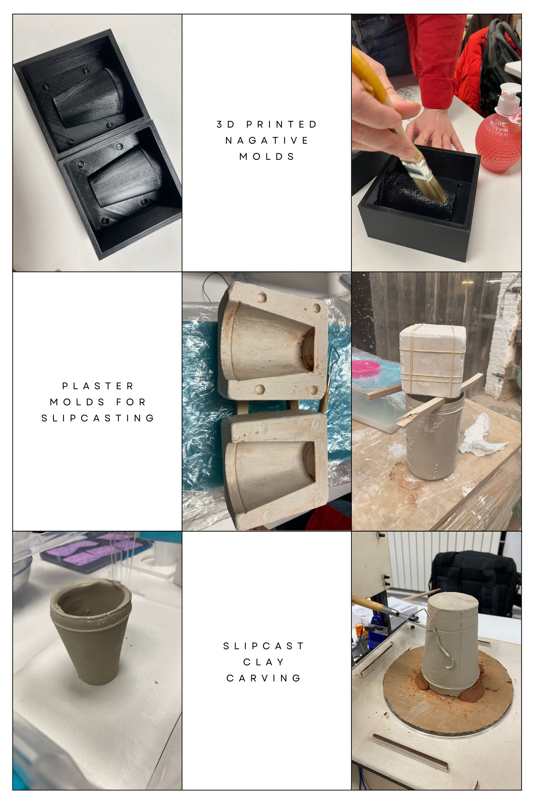
With the help of Eduardo and ChatGPT4 we were able to get the microphone to control the z-axis motor. It is designed to that when the sound coming from the microphone goes above a threshold the z-axis steps up a bit on its slow continuous descent. This cause the blade to make a little "jump" in response to the vibrations of the voice. It is still not working perfectly as the turntable motor pauses momentarily when the z-axis moves up. Despite this we managed to carve one cup as a proof of concept. We are looking forward to making more improvements in the future.
Andaaza Microphone Test by agjarv
Digital Prototyping for Design: Part II¶
Created: June 20, 2023